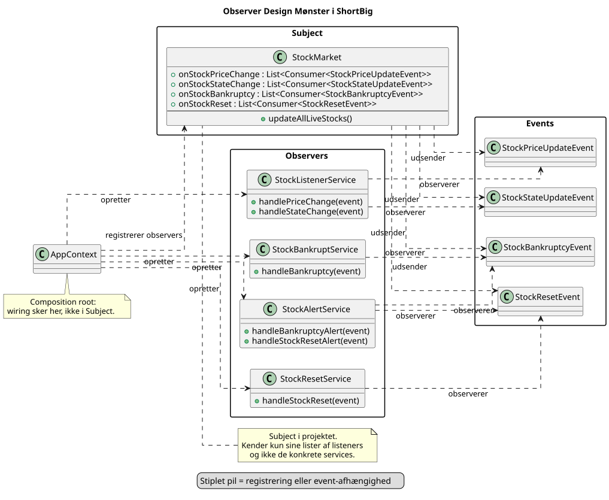

Observer i projektet
Question 2 / Slide 4
Projektet
Hvordan har jeg implementeret det?

StockMarket fungerer som subject, AppContext registrerer listeners, og flere handlers reagerer på events.
Forrige
Næste